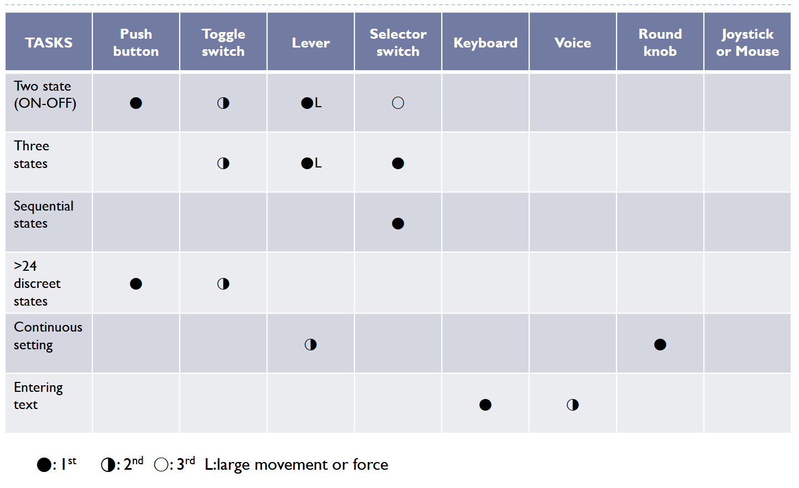
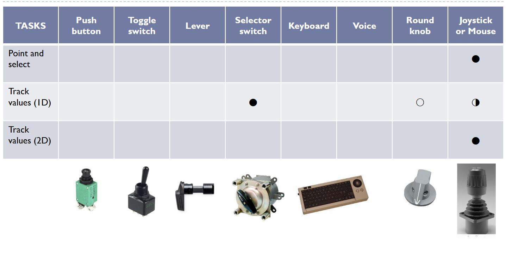
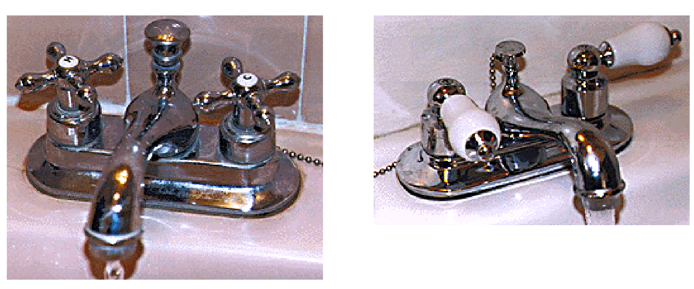
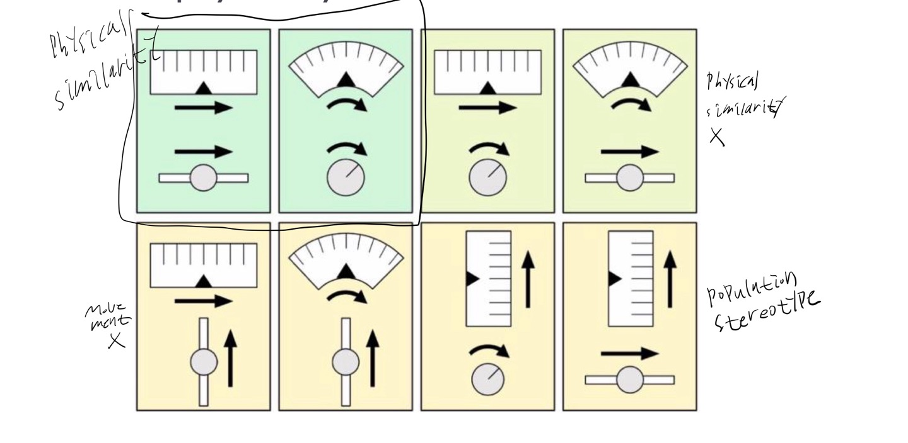
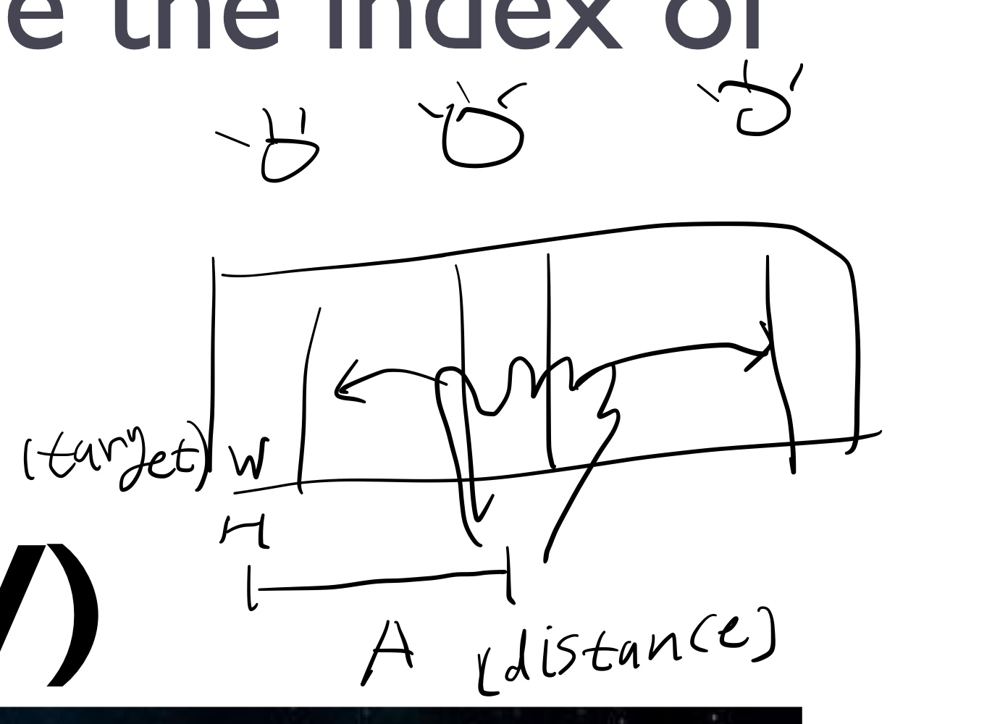

Control
인간 공학
개념 정리
Control에 대해 알아봅니다

Basic Control Task and Device


- 상태를 체크할 때는 toggle switch, 눌렀다 떼는 건 push button
- 레버도 상태를 체크할 때 사용. 그 중 큰 힘이 필요한 경우. continuous setting에서는 slider가 쓰임
- selector switch는 lever랑은 다르게 discrete한 상태가 있음 (선풍기 버튼)
- 조이스틱은 보통 가속도(2D, 멀리 밀면 빨리 가는 애)를 제어하거나 속도(1D, 버튼 조이스틱)를 제어하는데 사용. 마우스는 위치를 제어.
15 principles to design of control device
Attention principles
Proximity compatibility
- 컨트롤 하고자 하는 대상과 컨트롤이
가까워야한다. - 비상 스위치는 가까이 있어야 한다.
Avoid resource competition
- 같은 physical or cognitive resource를 사용하는 control은 피해야한다.
ex) 레버로 속도, 방향 모두 제어
Perceptual principles
Make accessible
- physical accessibility: 손이 닿아야 한다.
- cognitive accessibility: 뭐 하는 control인지 이해하기 쉬워야 한다.
ex) 미는 손잡이는 flat하게 만든다. - 다양한 환경을 고려해야한다. (빛이나 소음이 많은 환경)
Make discriminable
- visual differentiation: 각각의 컨트롤 장비를 구분할 수 있게
- logical grouping: 비슷한 기능을 하는 것끼리 묶어놓기
Exploit(활용) redundancy gain
- 두개의 독립적인 정보를 제공하면 성능이 좋아진다.
- 한 가지 정보가 없어도 다른 정보로 대체할 수 있다.
Avoid absolute judgement limits
- working memory limit(7)를 넘기지 말라.
- continuous vs with detents: 연속적인 조절에서 anchor point를 만들어주면 좋다.
Memory Principles
Knowledge in the world
보편적으로 아는 표현을 사용
Be consistent
- 다른 상황에서도 예상 가능하고 일정한 방법으로 control이 가능해야한다.

- make discriminable vs be consistent
Mental model principles
Location Compatibility
- Spatial Compatibility / physical similarity
Movement Compatibility

Population Stereotypes
- rotary controls: 시계방향으로 돌리면 커진다
- Up is on
- Increase is right, Forward is faster
Response selection principles
Avoid accidental activation
- 사고로 눌리는 것을 방지해야한다.
Hick-Hyman Law
\(RT = a + b \log_2(n+1)\)
N is the number of choices
종류가 많아져도 그냥 몇개만 고민함
Decision complexity advantage
- 일반적으로 복잡한 선택을 적게 하는게 간단한 선택을 여러번 하는것보다 효율적이다
Fitt’s Law

- Index of Difficulty: \(ID = \log_2(\frac{2A}{W})\)
- Movement Time: \(MT = a + bID\)
avoid accidental vs Fitt’s Law - target width가 구석에 있으면 width가 무한대가 된다.
provide feedback
touch screen은 haptic feedback이 없어서 불편함